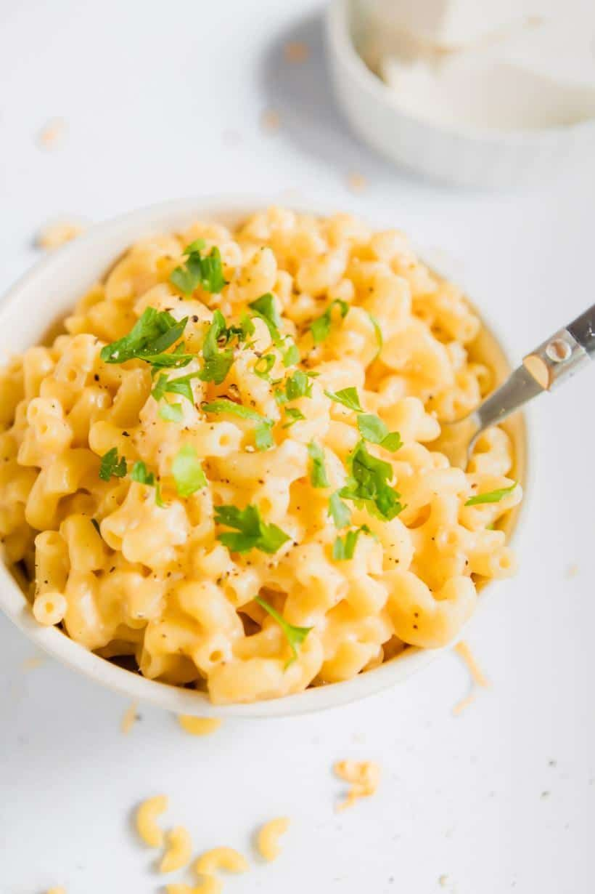

Protein Mac and Cheese

This mac and cheese is real and good food. It will leave us full but also help us make gains and put on muscle.
You cannot get fat eating this mac and cheese. You have my gurantee. Courtesy Remy Jones.
Ingredients
- 224g Chickpea Pasta
- 160g Unsweetened Almond Milk
- 84g Fat Free Cream Cheese
- 112g Fat Free Cheddar
Steps
Its so easy!
-
Measure and Cook Pasta for 7-8 minutes. Add salt
-
Simmer Almond Milk
-
Add fat free creamcheese into almond milk. Once creamcheese is milted, add cheddar cheese. Heat and stir until all melted.
-
Once cheese sauce is same consistency, add pasta and stir.